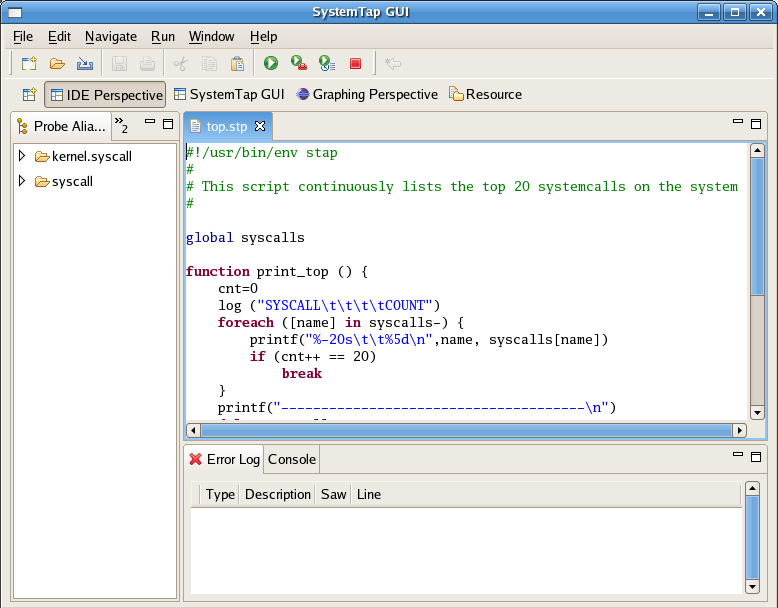

Table of Contents > Getting Started > IDE Tutorial
IDE Tutorial, Lesson One: Getting Started
In this tutorial we will orient you with IDE Perspective and its functions. At this point we assume
that you are able to run Systemtap GUI and are unfamiliar with how to procede. If you cannot yet start
the application, please refer to our section on installation.
NOTE: If this is the first time opening the IDE Perspective it will take a while to load as it has to
parse everything in the tapsets.
The IDE Perspective's purpose is to allow the user to create, view, and edit Systemtap scripts. There are
other editors built in (plain text and the C editor), however, they ultimately exist to facilitate the
writing of Systemtap scripts.
In this lesson we will open a new Systemtap script file to familiarize ourselves with the IDE Perspective.
Start by opening the File menu and selecting Open. A dialogue box will pop up and request the
location of the file you want to open. We've included a folder called "examples" right in the tar ball. You
may chose any of them to use; in this tutorial we will open top.stp. Go ahead and open the file.

You'll see the file is loaded into the editor pane of Systemtap GUI. You'll also noticed different colored
text. Systemtap GUI supports syntax highlighting for the ease of the writer. Feel free to edit the file.
At this point proceed to Lesson 2 if you wish to learn how to write your
own script file or Lesson 3 if you wish to run this one.
Back to Tutorial Contents